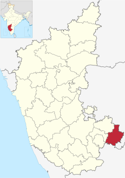

Overview of Kolar, Karnataka

- Historical Significance: Kolar district has a rich historical background, with mentions of its association with the epic age, legends, and religious establishments dating back to ancient times.
- Western Ganga Dynasty: The Western Ganga dynasty ruled Kolar district from around 350 to 550 CE, with Kolar serving as their capital city.
- Geographical Features: Kolar is situated at an average elevation of 849 meters (2,785 ft) and is located approximately 70 kilometers (43 mi) from Bengaluru.
- Transportation: Kolar serves as a gateway to Tirumala and Chennai via National Highway 75. It is well-connected by road, located on the Bengaluru - Chennai National Highway 75, and has good road transportation infrastructure.
- Demographics: According to the 2011 census, Kolar city municipality had a population of 138,462, with a significant proportion of Urdu and Kannada speakers. The population has grown at a rate of 21.56% in the last decade.
- Civic Utilities: The city faces challenges such as a shortage of drinking water, with pipes over 35 years old. It receives water supply from various sources, including borewells and tanks. The city also deals with issues related to waste management and drainage systems.